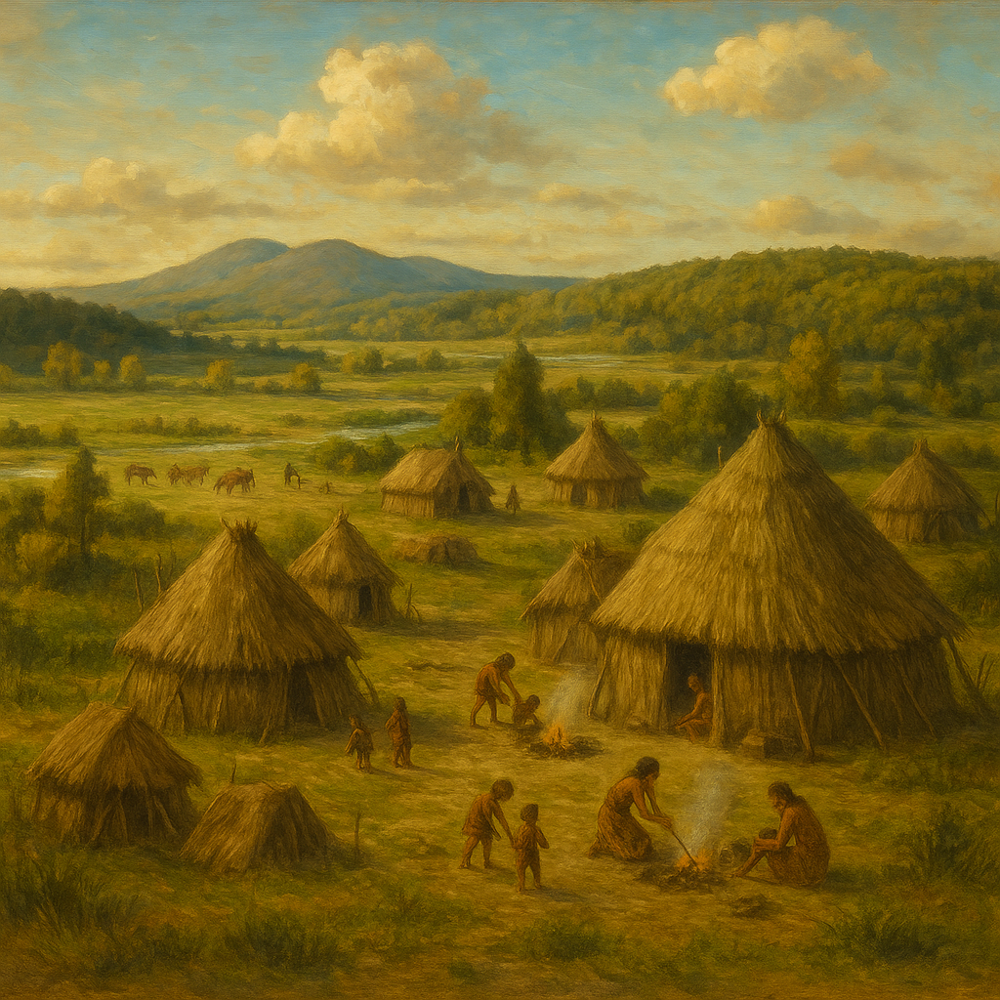
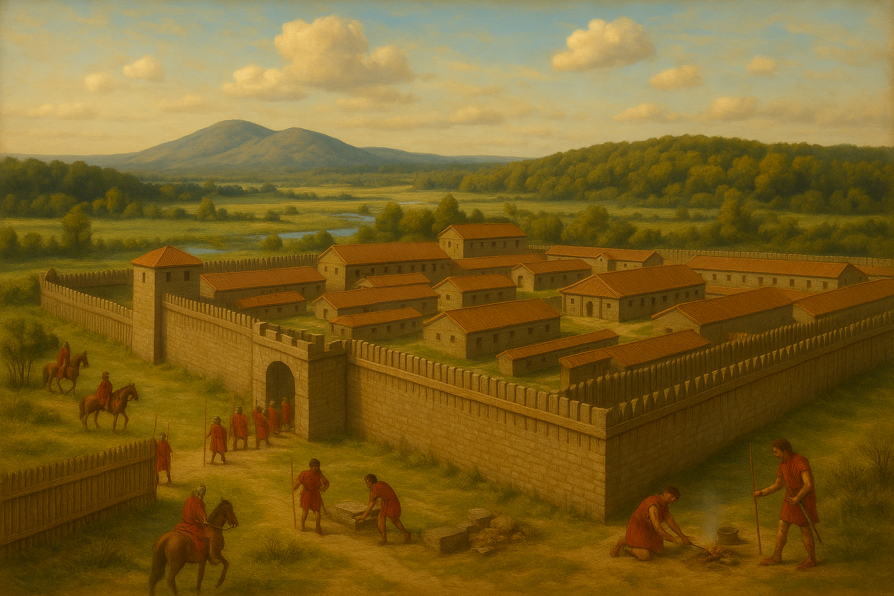

Sarteano: dalle origini preistoriche all’epoca romana
Preistoria e prime testimonianze umane
Il territorio di Sarteano, situato tra la Valdichiana e la Val d’Orcia nell’attuale Toscana meridionale, vanta un’occupazione umana antichissima. Le evidenze archeologiche indicano una continuità di insediamento fin dal Neolitico. In particolare, la Grotta dell’Orso (sul Monte Cetona) è un sito preistorico di grande rilevanza per la zona, con tracce di frequentazione umana già nel Neolitico. All’Età del Bronzo risale invece un altro importante giacimento: la cavità detta Buca del Rospo, che ha restituito reperti di quell’epoca. Questi siti attestano che l’area di Sarteano era popolata ben prima della comparsa della civiltà etrusca.
L’epoca etrusca (IX–I secolo a.C.)

Il periodo etrusco ha lasciato le tracce più significative nel territorio sarteanese. Sarteano, posta nell’orbita della potente città etrusca di Chiusi (Clusium), fu intensamente abitata dagli Etruschi dal IX al I secolo a.C.. I primi piccoli villaggi sorsero sulle alture più elevate: ad esempio presso la necropoli di Sferracavalli, lungo l’antico tracciato verso Radicofani. Col passare dei secoli l’insediamento si espanse: nel VII secolo a.C. (periodo Orientalizzante) la popolazione si concentrò nell’area di Castiglioncello del Trinoro, dove è stata rinvenuta la vasta necropoli di Solaia-Macchiapiana. Quest’ultima ha restituito numerose sepolture entro canopi, ossia urne cinerarie con coperchio antropomorfo tipiche di questo territorio, a indicare l’esistenza di un centro abitato densamente popolato già nel tardo Orientalizzante. Con l’inizio del periodo arcaico (VI secolo a.C.) si osserva uno spostamento dell’abitato su colline leggermente più basse (attorno ai 500 m s.l.m.), probabilmente per avvicinarsi a Chiusi, che in quell’epoca viveva il suo massimo splendore sotto il leggendario lucumone Porsenna.
Di conseguenza, le necropoli principali del VI secolo a.C. si trovano lungo le vie che conducevano verso Chiusi (le antiche vie cupe scavate nel travertino). Due esempi sono la Necropoli della Palazzina e soprattutto la Necropoli delle Pianacce, situata poco a nord dell’odierno centro abitato. Affresco etrusco nella “Tomba della Quadriga Infernale” (metà IV sec. a.C.), scoperta a Sarteano: vi è raffigurato il demone Charun che guida una quadriga trainata da leoni e grifoni verso l’oltretomba. Questa necropoli delle Pianacce – indagata sistematicamente a partire dal 2000 – ha riservato scoperte straordinarie. In posizione panoramica, affacciata sulla Val di Chiana e a controllo di un importante asse viario nord-sud tra Orvieto e Arezzo, le Pianacce hanno restituito una tomba affrescata unica nel suo genere: la celebre Tomba della Quadriga Infernale (databile alla seconda metà del IV sec. a.C.).
Al suo interno, sulle pareti di travertino, è dipinta una scena infernale dai colori ancora vividi: un demone dai capelli rossi – identificato con Charun, il Caronte della mitologia etrusca – conduce un carro trainato da due leoni e due grifoni, probabilmente per trasportare il defunto nel regno dei morti. Altre immagini arricchiscono il ciclo pittorico: due figure maschili banchettano distese su un triclinium con accanto un servitore, mentre su un’altra parete compaiono un grande serpente a tre teste e un ippocampo (cavallo marino) posti a guardia di un sarcofago. Queste rappresentazioni, dal carattere macabro e fantastico, riflettono l’evoluzione della concezione etrusca dell’oltretomba nel IV secolo a.C.: un mondo funerario più inquietante e tormentato rispetto a quello sereno dell’epoca arcaica. Accanto alla tomba dipinta sono state rinvenute numerose altre tombe a camera, databili fra la fine del VI e il I secolo a.C., segno che la necropoli delle Pianacce fu utilizzata a lungo dalle aristocrazie locali. Particolarmente interessante è una struttura “teatriforme” (simile a un piccolo teatro) scoperta nel 2007 in connessione con tre tombe: si ritiene che servisse per i rituali funerari e le cerimonie legate al culto dei defunti. Durante l’epoca ellenistica (III–II sec. a.C.), il popolamento del territorio di Sarteano divenne più diffuso ma frammentato (a macchia di leopardo): accanto ai siti maggiori, sorsero piccoli nuclei sparsi con le relative necropoli. In località Molin Canale, ad esempio, sono state portate alla luce alcune tombe di questo periodo, oggi rese accessibili ai visitatori.
Sarteano in epoca romana
Con l’integrazione nell’orbita di Roma (II-I secolo a.C.), la zona di Sarteano non venne abbandonata, anzi mantenne una diffusa occupazione in epoca romana. La continuità insediativa è confermata sia dalla presenza di comunità rurali, sia dallo sfruttamento delle risorse locali: ad esempio, i Romani apprezzarono e utilizzarono le sorgenti termali del territorio. Sono emerse testimonianze di almeno due importanti nuclei in età romana: uno presso la località Sant’Alberto e un altro nell’ampia area di Peschiera Giannini (poco fuori Sarteano). In queste zone sono stati identificati i resti di edifici termali appartenenti a villae rusticae (fattorie-villa) di proprietari facoltosi.
Tali strutture presentano un notevole grado di raffinatezza architettonica: ad esempio sono stati rinvenuti elementi decorativi come lastre di tipo “Campana” (rilievi fittili ornamentali) provenienti dagli scavi di Colombaio e Peschiera, indice di ambienti curati e di una certa ricchezza. Sul finire dell’epoca etrusca, dunque, il tessuto culturale locale si trasformò gradualmente sotto l’influenza romana: le pratiche funerarie monumentali etrusche si esauriscono entro il I secolo a.C., lasciando il posto a usanze e architetture romane (ville, terme, strade consolari) senza però una brusca rottura demografica. I reperti archeologici confermano questo passaggio culturale.
Nel territorio sarteanese si trovano sia manufatti etruschi sia romani: ad esempio, accanto ai canopi orientalizzanti, ai vasi in bucchero e alle ceramiche figurate (etrusche e di importazione attica) tipiche dell’epoca etrusca, sono stati scoperti oggetti di età romana come monete, utensili e decorazioni architettoniche. Di particolare rilievo sono alcune statue cinerarie in pietra fetida (tipiche urne funerarie etrusche in pietra calcarea locale) rinvenute nel 2006 nel comprensorio di Sarteano. Tutti questi materiali, testimoni dell’avvicendarsi di tre civiltà (dalla preistoria età del Bronzo agli Etruschi fino ai Romani), sono oggi esposti presso il Museo Civico Archeologico di Sarteano. Vale infine la pena sottolineare la continuità dell’abitato attraverso le epoche: alla fine dell’Impero Romano non si registra un’interruzione della presenza umana a Sarteano.
Alcune evidenze indicano che la comunità locale sopravvisse anche nella prima fase altomedievale – ad esempio, è stata trovata una tomba longobarda in località Montarioso e tracce di frequentazione altomedievale presso la necropoli delle Pianacce. Successivamente, il nucleo abitato medievale si consolidò nella posizione dell’odierno paese, attorno all’acropoli dove sorgerà il castello, a conferma di un passaggio graduale e senza soluzione di continuità dall’età romana al Medioevo.
Fonti: Le informazioni sono basate su ricerche e scoperte archeologiche documentate dal Comune di Sarteano e dagli enti locali di tutela del patrimonio storico, nonché su studi pubblicati riguardo alla Tomba della Quadriga Infernale e alle necropoli etrusche di Sarteano.